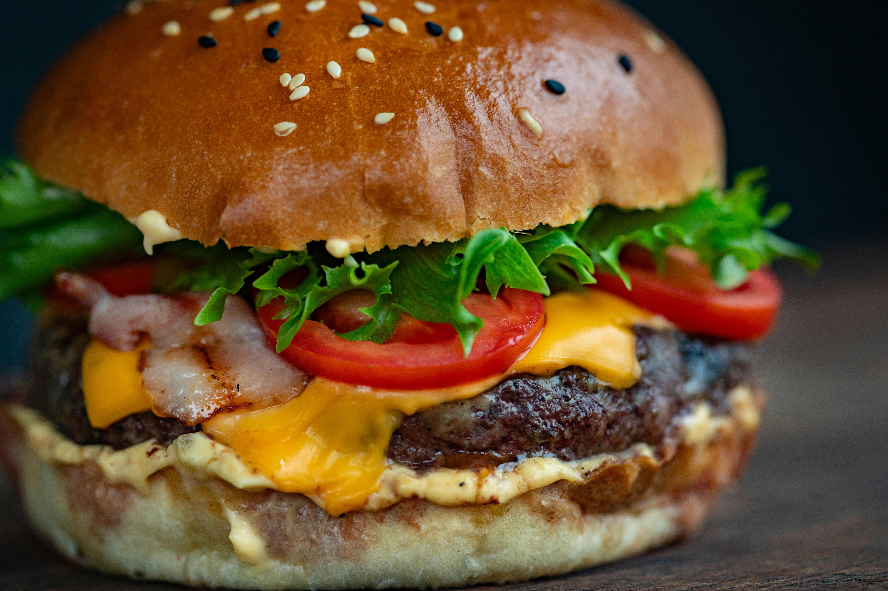
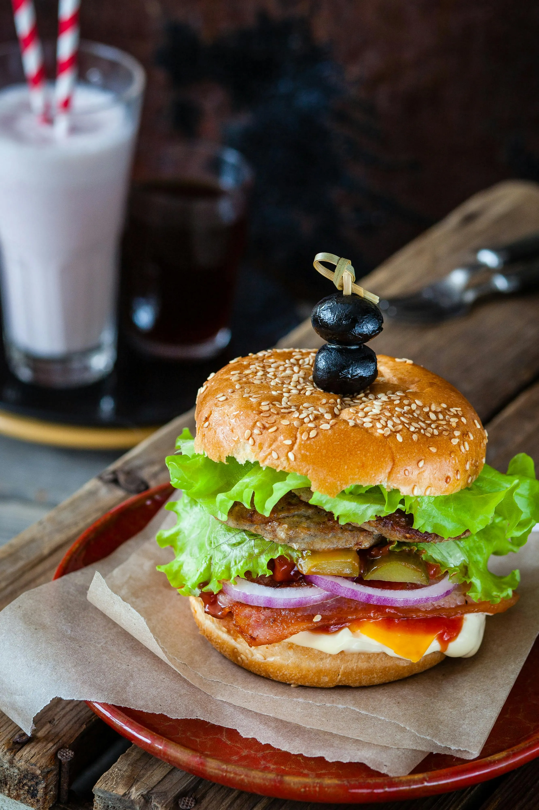

Nuestra tradición
En Eliza's Burger, nuestra historia comenzó con una simple pasión: crear las hamburguesas más deliciosas y auténticas que puedas imaginar. Todo empezó en un pequeño local en el corazón de Caracas, donde Eliza, nuestra fundadora, decidió compartir su amor por la buena comida con el mundo. creemos que los ingredientes hacen la diferencia. Por eso, seleccionamos cuidadosamente cada uno de ellos: desde la carne jugosa y fresca hasta los vegetales crujientes y los panes artesanales recién horneados. Cada bocado es una explosión de sabor y calidad que no encontrarás en ningún otro lugar.
Con ingredientes frescos y recetas cuidadosamente elaboradas, cada hamburguesa que preparamos es una obra maestra. Nos enorgullece ofrecer un sabor único que combina lo mejor de la tradición venezolana con toques innovadores que te sorprenderán. Las hamburguesas no son solo nuestra especialidad, son nuestra pasión. Cada una de nuestras creaciones está hecha con amor y dedicación, pensando en brindarte una experiencia única. No importa si prefieres clásicas o innovadoras, en Eliza's Burger tenemos la hamburguesa perfecta para ti.

¿Por qué somos la mejor hamburguesería de Venezuela? Porque no solo nos preocupamos por el sabor, sino también por la experiencia. Cada visita a Eliza's Burger es un momento especial, donde te sentirás como en casa mientras disfrutas de nuestras creaciones únicas. Ven y descubre por qué Eliza's Burger es el lugar favorito de los amantes de las hamburguesas. ¡Te esperamos con los brazos abiertos y las parrillas calientes!